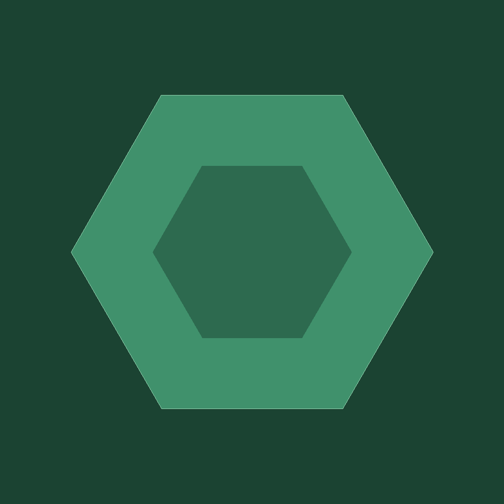

Reveal your atlas
Discover a 20-metre hex grid on foot, by bike, in transit, or wherever the day takes you.

AtlasboundLocation RPG for iPhone
Move through the real world to reveal a personal atlas, master familiar territory, follow treasure trails, and discover what waits beyond the fog.
Explore differently
Atlasbound turns everyday movement into a persistent exploration game.
Discover a 20-metre hex grid on foot, by bike, in transit, or wherever the day takes you.
Revisit tiles to earn familiarity XP, progress mastery, and build your explorer profile.
Take on weekly expeditions, daily landmark trails, vaults, relics, and field finds.
Play five-round Pinpoint challenges using spoiler-free Look Around scenes.
Review territory, records, routes, places visited, and progress in your journal.
Your atlas and game progress are persisted locally on your iPhone.
Sideload on iPhone
Atlasbound ships as an unsigned IPA. Your sideloading app signs it locally with your Apple ID.
In AltStore or SideStore, open Sources and add a new source.
Paste this URL when prompted:
https://ykdbontekoe.github.io/atlasbound/apps.json
Select Atlasbound from the source. Future releases appear there as updates.
Documentation
The complete technical documentation lives beside the source on GitHub.
Ownership, layering, state flow, engines, stores, controllers, and views.
Hex identifiers, route coverage, discovery XP, familiarity, and mastery.
Local setup, project conventions, file layout, and validation commands.
Automatic versioning, unsigned IPA builds, releases, and the AltStore source.
Automated suites, simulator guidance, and the manual test matrix.
Browse the app, report an issue, or follow the latest development.